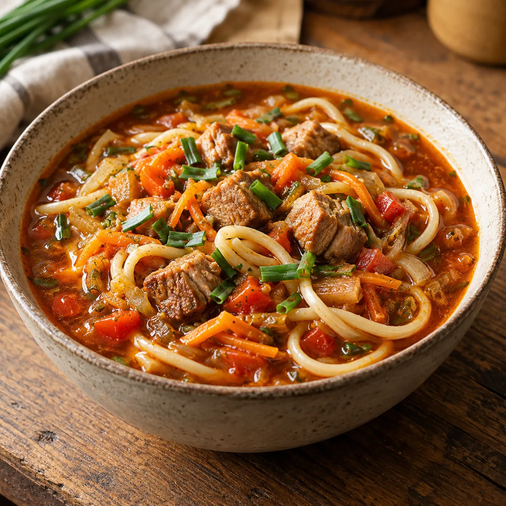

Unsere Klassiker · Suppen
Lagman
Von Rita K.

Ein kräftiger, wunderbar sättigender Nudeltopf mit zartem Schweinenacken und viel Gemüse. Die Menge reicht für etwa vier bis fünf Personen – oder ganz entspannt für zwei Tage.
Zutaten
600–700 gSchweinenacken
2Zwiebeln
2 ZehenKnoblauch
1 BundDschusai oder Knoblauch-Schnittlauch
3Möhren
1Paprika
1Rettich
2 ELTomatenmark
Optional1 Peperoni
400 gSpaghetti oder andere lange Nudeln
2 ELMargarine oder neutrales Öl
Nach BedarfWasser
Nach GeschmackSalz und Pfeffer
Zubereitung
- Den Schweinenacken in kleine Würfel schneiden. Zwiebeln und Knoblauch fein würfeln, Dschusai oder Knoblauch-Schnittlauch klein schneiden. Möhren und Rettich schälen und grob reiben. Die Paprika würfeln.
- Die Margarine oder das Öl in einer großen Pfanne erhitzen. Das Fleisch portionsweise kräftig anbraten. Zwiebeln, Knoblauch und Dschusai dazugeben und kurz mitbraten. Anschließend alles in einen großen Topf geben.
- Möhren und Rettich nacheinander in derselben Pfanne anbraten und jeweils zum Fleisch in den Topf geben.
- Die Paprikawürfel ebenfalls kurz anbraten. Das Tomatenmark hinzufügen und unter Rühren mitrösten, bis es leicht dunkler wird. Danach beides in den großen Topf geben.
- Den Topfinhalt mit so viel Wasser auffüllen, dass Fleisch und Gemüse gerade bedeckt sind. Alles aufkochen lassen, die Peperoni nach Wunsch hinzufügen und bei mittlerer Hitze sanft köcheln lassen.
- Währenddessen die Nudeln nach Packungsangabe in Salzwasser bissfest kochen und abgießen. Den Lagman abschließend mit Salz und Pfeffer kräftig abschmecken.
- Die Nudeln auf tiefe Teller verteilen und den heißen Lagman darübergeben. Direkt servieren.
Tipp
Nudeln und Lagman am besten getrennt aufbewahren. So saugen sich die Nudeln nicht mit der Brühe voll und das Gericht schmeckt auch am nächsten Tag noch richtig gut.